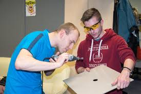

Informacja o Nas

- Zamieszkanie: Wrocław
- Telefon:
- E-mail:
Zajmujemy się szeroko pojętą elektrycznością, a w szczególności energoelektroniką, elektroniką,
wysokimi napięciami, automatyką i robotyką, techniką mikroprocesorową, elektromechaniką oraz popularyzacją
nauki w zakresie zjawisk elektrycznych.
U nas nauczysz się samodzielnie wytrawiać płytkę PCB, projektować proste układy elektroniczne, a potem lutować je i składać. Posiadamy szereg narzędzi niezbędnych do realizacji projektów.
Nasi członkowie, przyszli inżynierowie elektrycy, uczestniczą w ciekawych wycieczkach do elektrowni (np. Bełchatów), fabryk (np. Alstom), na stacje elektroenergetyczne oraz w występach edukacyjnych (np. Teatr Wysokich Napięć w Centrum Nauki Kopernik w Warszawie). Organizujemy lub współorganizujemy różnorodne szkolenia, m.in. z pomiarów termowizyjnych, umiejętności miękkich.
Chętnie przyjmiemy w swoje szeregi osoby chcące rozwijać swoje zdolności. Obecnie nasze prace koncentrują się na dopracowaniu rozpoczętych projektów (m.in. cewka Tesli, drabina Jakubowa, system pomiarowy elektrowni hybrydowej) oraz rozpoczynamy pracę nad nowym projektem.
Zapraszamy do lajkowania naszego profilu na facebooku StrimerPWr, gdzie znajdziecie aktualności, zdjęcia i inne informacje.
U nas nauczysz się samodzielnie wytrawiać płytkę PCB, projektować proste układy elektroniczne, a potem lutować je i składać. Posiadamy szereg narzędzi niezbędnych do realizacji projektów.
Nasi członkowie, przyszli inżynierowie elektrycy, uczestniczą w ciekawych wycieczkach do elektrowni (np. Bełchatów), fabryk (np. Alstom), na stacje elektroenergetyczne oraz w występach edukacyjnych (np. Teatr Wysokich Napięć w Centrum Nauki Kopernik w Warszawie). Organizujemy lub współorganizujemy różnorodne szkolenia, m.in. z pomiarów termowizyjnych, umiejętności miękkich.
Chętnie przyjmiemy w swoje szeregi osoby chcące rozwijać swoje zdolności. Obecnie nasze prace koncentrują się na dopracowaniu rozpoczętych projektów (m.in. cewka Tesli, drabina Jakubowa, system pomiarowy elektrowni hybrydowej) oraz rozpoczynamy pracę nad nowym projektem.
Zapraszamy do lajkowania naszego profilu na facebooku StrimerPWr, gdzie znajdziecie aktualności, zdjęcia i inne informacje.